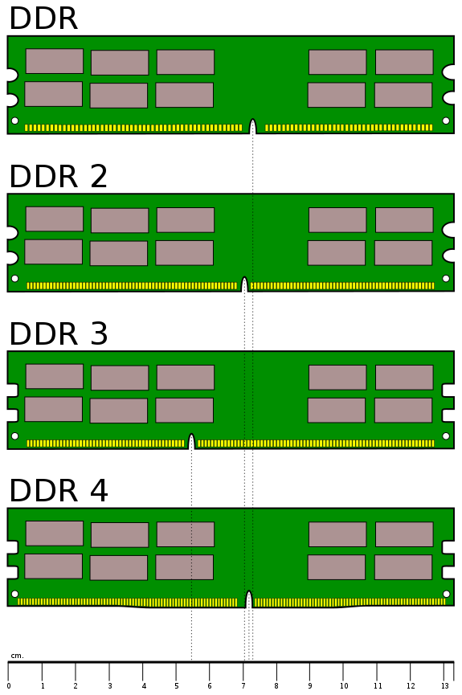
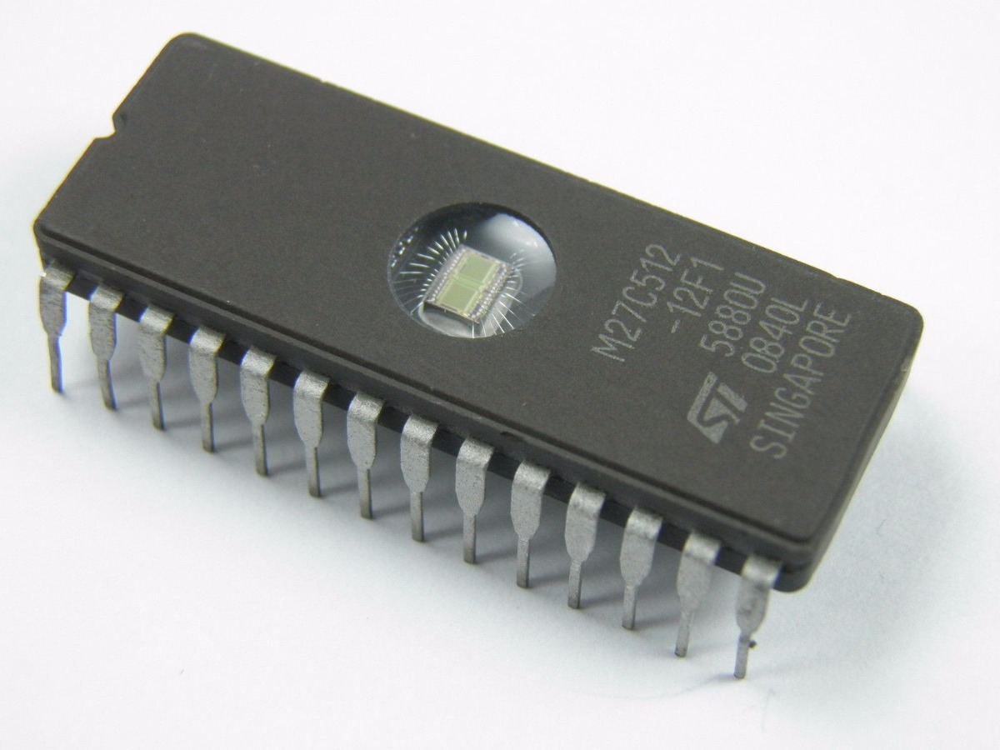
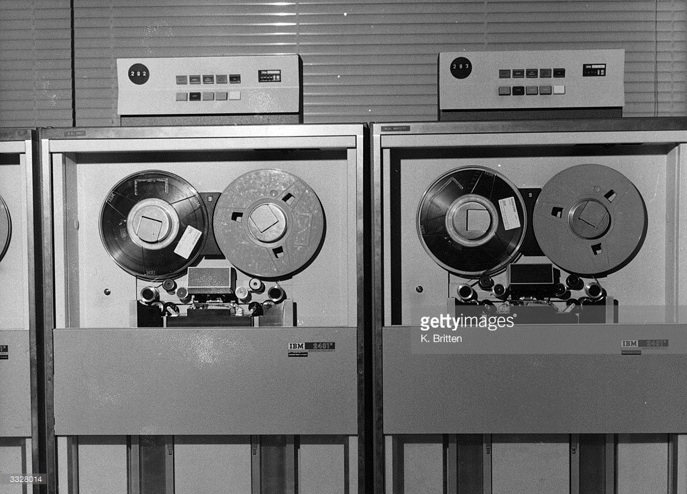
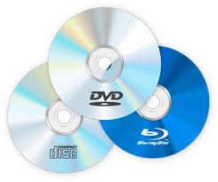
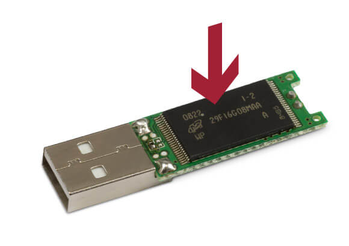
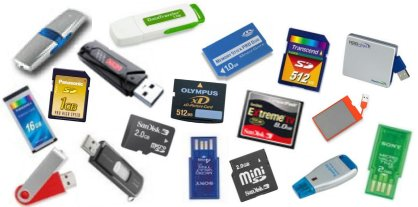

Memorias

Memoria
En computación, la memoria es el dispositivo físico usado para guardar Secuencia de Instrucciones y/o Datos de manera permanente o temporaria para ser utilizados en la computadora.Memorias
Hay distintos tipos, y se pueden clasificar de varias formas:
Clasificación:
Según método de ACCESO
- Aleatorio (RAM)
- Secuencial
- Asociativo (cache)
Clasificación:
Según método escritura
- Solo Lectura (ROM)
- Lectura Escritura
Clasificación:
Según la permanencia de datos
- Volátil
- No volátil
Características Principales:
- Velocidad
- Capacidad
- Costo
Jerarquía de Memoria

Registros
- Están implementados como parte del Microprocesador
- Son muy pocos, del orden de las decimas
- Trabajan a la velocidad de relog del procesador.
Memoria de Sistema
- Es la memoria principal de la computadora
- Almacena código de programa y datos
- Comúnmente llamada RAM
Memoria de Sistema (RAM)
Implementaciones
Memoria de núcleos magnéticos

Memoria de Sistema (RAM)
Implementaciones
Memoria semicondutora 1024 bytes

Memoria de Sistema (RAM)
Actualmente hay dos tipos- SRAM
- DRAM
Memoria de Sistema (RAM)
SRAM (Static RAM)
- Es mas rápida que la DRAM
- Es mas costosa que la DRAM
- Consume menos energía que la DRAM
- Mas compleja y menos densa que la DRAM
Memoria de Sistema (RAM)
DRAM (Dinamic RAM)
- Hace falta refrescar los datos
- El refresco la hace mas lenta
- Es mas densa que la SRAM
- Mas común que la SRAM
Memoria de Sistema (RAM)
DRAM (Dinamic RAM)
Memoria de Sistema (RAM)
DDR4 SDRAM
- Double Data Rate 4 Synchronous Dynamic Random-Access Memory
- A partir de 2014
- Hasta 64GiB por modulo DIMM
- Velocidad hasta 3200Mhz (DDR4-3200)
- Transferencia 25.6GB/s
Memorias de Sistema (ROM)
ROM (Read Only Memory)
ROMs
- pantalla
- ROM
- PROM
- EPROM
- EEPROM (E2PROM)
ROMs
- ROM - Read Only Memory
- PROM - Programable ROM
- EPROM - Erasable PROM
- EEPROM - Electrically EPROM
- FLASH
ROMs
Comúnmente son utilizadas para la BIOS de la PC, o guardar programas muy pequeños de arranque de los dispositivos.Medios de Almacenamiento

Medios de Almacenamiento
- Memorias con gran capacidad de almacenamiento
- Tipo no volatil
- Utilizan diferentes medios físicos para almacenar datos.
Medios de Almacenamiento
- Memorias con gran capacidad de almacenamiento
- Tipo no volatil
- Utilizan diferentes medios físicos para almacenar datos.
Medios de Almacenamiento
Clasificación según el medio Físico- Ópticos
- Magnéticos
- Silicio
- Papel
Almacenamiento Papel

Almacenamiento Papel

Almacenamiento Papel

Almacenamiento Magnético
Cinta Magnética
Almacenamiento Magnético
Cassette BackUps
- 15Tb
Almacenamiento Magnético
Floppy disk
- 1.44Mb

Almacenamiento Magnético
Discos Duros
- 15Tb (20Tb para 2020)

Almacenamiento Óptico
CD/DVD/BlueRay
- 700Mb / 4.7Gb -17Gb / 25Gb - 128Gb

Almacenamiento Óptico
CD/DVD/BlueRay

Almacenamiento Óptico
Otros

Almacenamiento en Silicio
NAND-FLASH
Almacenamiento en Silicio
Almacenamiento en Silicio
Discos de Estado Solido - SSD

Almacenamiento en Silicio
Discos de Estado Solido - SSD